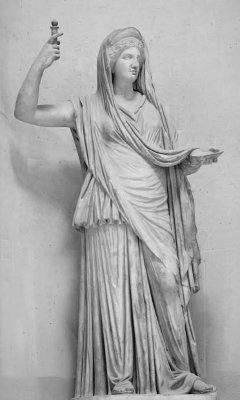

Nasıl olduysa oldu, Baştanrı Zeus'un yüreği çok yumuşadı bir gün... Hem insanların kendilerine, hem de yaşadıkları dünyaya egemen olan bütün kötülükleri yok etmek istedi; bunu isterken ilkin tanrıların rahatını da düşünmedi değil!.. O yüzden kendi buyruğunda olacak öyle bir kahraman yaratacaktı ki, anında gidip istediği bir kötülük yuvasını kurutacaktı!.. Böylece yeryüzünden kendisine ve tanrıların ülkesi Olimpos'a bulaşabilecek bütün illetleri önlemiş olacaktı...
Bu düşüncesini gerçekleştirmek üzere bir gece Baştanrı Zeus; kendi tetiklediği bir savaş yüzünden karısı güzel Alkmene'yi yalnız başına bırakmış olan kral Amfitriyon (Amphitrion) kılığına büründü... Doğruca sarayına gidip Alkmene'nin yatağına girdi ve onunla çok uzun süren bir gece geçirdi. Çünkü Zeus, tanrı Helyos'a güneşi üç gün gökyüzünde atlarıyla koşturmama buyruğu verdiğinden o gece ay; üç kez doğdu, üç kez battı! Dokuz ay sonra da güzel Alkmene, sonradan Herakles adını alacak nurtopu gibi bir oğlan çocuğu getirdi dünyaya... Ne var ki Zeus'un karısı tanrıça Hera da bu çocuğun kocası Zeus'tan olduğu dedikodusunu duyunca küplere bindi. Bu konuda kulağına çalınan söylentilerin gerçek mi yalan mı olduğunu anlamak için yeni doğan bebeğin odasına iki azman yılan gönderdi. Karısının bu oyununu anında öğrenen Baştanrı Zeus da hemen çocuğunu uyandırdı... Uyanan bebek, yılanlardan birini sağ, ötekini sol koluna doladı büyük bir rahatlıkla onları boğup öldürdü! Bebek Herakles de, yeryüzünde ilk kahramanlığını böylece sergilemiş oldu... Ne var ki anası kraliçe Alkmene, tanrıça Hera'nın yeniden hışmına uğrama olasılığından çekindiği için bebeğini koyun-keçi sürülerinin otladığı bir bayıra bırakıp geldi içi yana yana... Bu kez de Baştanrı Zeus, ileride çok özel görevler yükleyeceği bu terk edilmiş öz çocuğunu koruması altına aldı... Kendi dölü olmasına karşın dünyalı bir anadan doğduğu için yarıölümlü olan Herakles'e, ölümsüzlük ayrıcalığı kazandırmak istedi. Bunun için de ölümsüz bir tanrıçanın sütünü emmesi gerekiyordu bebeğin! Zeus'un kızı tanrıça Atena araya girdi ve anası Hera'ya durumu anlattı; bebeğin sütanası olması konusunda ona yalvar yakar oldu. Hera, çok sevdiği kızı Atena'yı kıramadı. Bunun üzerine haberci tanrı Hermes, koyunların sütle beslediği mahzun bebek Herakles'i kucakladığı gibi tanrılar ülkesindeki Zeus'un sarayına getirdi. Tanrıça Hera artık onu emzirmeye başladı. Ama bir türlü memeye kanmak nedir bilmiyordu bu bebek! Sütanası Hera zorla ayırıyordu onu memelerinden! Gene bir gece Herakles, derin derin uyuyan Hera'nın memelerine yumuldu bütün acıkmışlığıyla... Öylesine sıkı emmeye başladı ki, canı yanan tanrıça bebeği kaptığı gibi yatağın ta ötelerine doğru savurup attı... Ne var ki memelerinden durmadan püsküren süt, dünyanın o yöresindeki yıldızlar üstüne aralıksız yağmaya başladı. Ve bu süt yağmurlarıyla ıslanıp ağırlaşan yıldızlar, gecenin serinliğinde üşüyüp titreşerekten birbirlerine sokulmaya başladılar. Böylece birbirlerine iyice sokulup büzüşen yıldızlar, gökyüzünde upuzun, pırıltılı ve dumanlı bir yol oluşturdular. Bir gecede oluşan ve bizim "samanyolu" dediğimiz bu sisli kuşağa artık Avrupa dillerinde "sütlü yol" denmeye başlandı[3].
Yıldızlardan sıçrayıp dünyamıza savrulan süt damlacıkları da, düştükleri yerlerde bembeyaz kır zambaklarına dönüştüler...
Tanrıça Hera'nın sütüyle beslenip artık ölümsüzleşen ve yeni yetmelik çağına ulaşan Herakles, bir süre sonra dünyamıza döndü ve Tebai krallığına yerleşti. Olimposlu babası Baştanrı Zeus da, yeryüzünde kendisine verilecek insanüstü görevleri yerine getirebilmesi için en seçkin uzmanların; bazı sanat ve zanaat dallarında Herakles'i inceden inceye eğitmeleri konusunda gerekli buyrukları verdi... Bu yüzden örneğin Atadam Heyron (Kheiron), onu gökbilim ve hekimlik konularında uzmanlaştırdı. Tanrı Apollon'un torunu müzisyen Linos da, ezgiler yakmasını ve lir çalmasını öğretti ona. Bu müzik eğitimi sırasında hocası Linos'la takıştığı için müzisyen Orfeus'un tarikatında bir çömez olarak da bir süre eğitim görmek zorunda kaldı... Gene bu arada Herakles, on sekiz yaşına dek, herkesin babası olarak tanıdığı Tebai kralı Amfitriyon'un sürülerini de güdüp yeddi...

Tanrıça Hera
Onsekiz yaşını bitirdiğinde ve tam kendi yazgısını ellerine alacağı anda da, iki genç kadın çıkageldi karşısına Herakles'in. Kendini Saltanat Hanım diye tanıtan allı-pullu genç kadın, altın-yakut takılar içinde boğulacak gibiydi! Durduğu yerde duramayan, ayağı gümüş halhallı ve pırlanta sandallı bu çıtkırıldım güzel; genç ve güçlü Herakles'e hayran olduğunu, hatta ona taptığını söyledi. Kendisiyle eş olarak yaşamayı kabul ederse, artık bir dediği iki olmayacaktı. Saltanat Hanım; Herakles'i el üstünde tutacak ve onu, adına yaraşır şekilde şehvet, dinginlik ve varsıllık içinde yaşatacaktı...
Adının Erdem Hanım olduğunu söyleyen diğer kadının üstünde başında, öyle takıp takıştırılmış süs cinsinden bir şeyler yoktu. Ama bakışları dalgındı; sanki bir yolculuktaymışçasına, bilinmeyen çok uzak serüvenlere çağırıyordu Herakles'i... Belki de Erdem Hanım'ın en çekici yönü, dalgın bakışlarından yansıyan o bir çeşit umut harmanına dönüşmüş güzel aydınlıktı. Yalnızca özel bir görevle yüklü insanlara özgü, yaşam boyu hiç silinmeyen sevinçle karışık bir hüzün ve bir çeşit tedirginlik, onun yüz çizgilerine nakışlanmış gibiydi... Erdem Hanım; dünyayı ve insanlığı saran ama çoğunlukla tanrıların saldıkları canavarlardan kaynaklanan kötülükleri yok etmenin biraz zaman alacağını söyledi. Ne var ki inançla sürdürülecek çabalar sonunda, dünyayı daha yaşanılır bir hale getirebileceklerinden söz etti. Böylece insanlığın Altınçağını birlikte hazırlamış olacaklardı... Haliyle zorlukla kazanılacak bu başarıdan daha kutsal bir şeyin olamayacağını da ekledi sözlerine... Kendisini dost olarak seçerse, bu uzun ve çileli süreci mutlaka birlikte aşacaklarını söyledi Erdem Hanım...
Herakles hiç düşünmeden ellerini Erdem Hanım'a uzattı hemen...